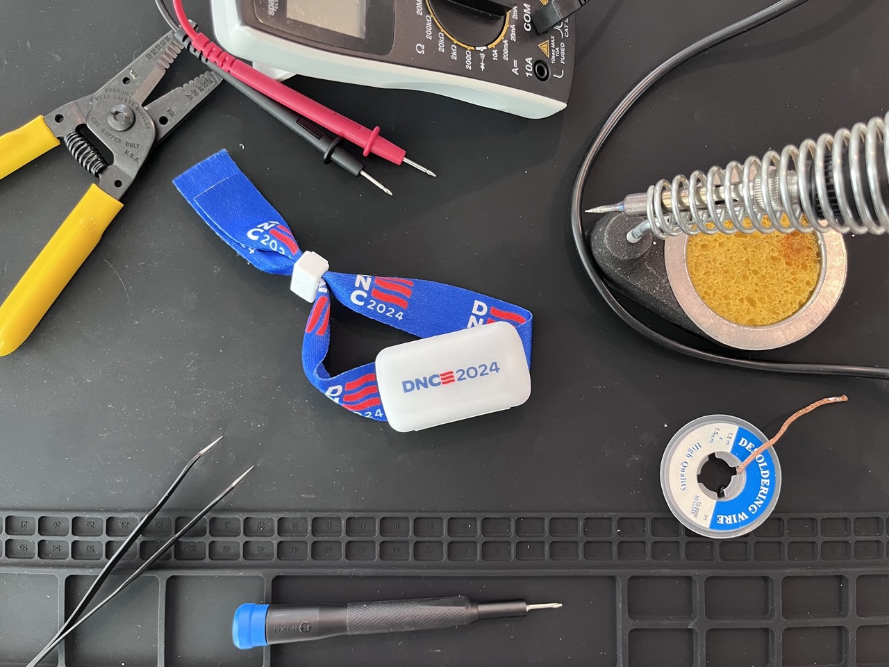

Heads up: This post has some videos that contain flashing lights.

If you managed to get a seat on the final night of the 2024 Democratic National Convention (I got there at 2:30 pm and still had to rely on seat-saving friends!) you probably also found an LED bracelet wrapped around your arm rest. I’m bad at remembering to take photos of things in the moment, so here’s mine over my kitchen counter:
If you’ve been to a large concert in recent years, you may have seen this before. It’s designed to give the audience an “immersive” experience with the entertainment,1 usually by activating the lights at key moments. At the 2024 DNC, that key moment of audience activation was when Vice President Kamala Harris walked out to deliver her speech. I didn’t take a photo of the crowd during that time, but everyone lit up in twinkling red, white, and blue lights. It was fun.
I used to work on immersive audience engagement tech (that has since pivoted to retail payment tech), so I was curious how this worked. Luckily, I took the bracelet home so I could find out!
The first thing that caught my eye was PIXMOB engraved onto the back of the plastic case.
I had never heard of PIXMOB, but their website gives some immediate answers. Apparently they offer three different wristband products. All of them look identical so I wasn’t sure which one I had. My first thought — as is often the case when I’m trying to learn something election-related — was to dig through some FEC filings. I spotted in the PIXMOB Terms and Conditions that the company is actually called ESKI Inc. I spent only a few minutes clicking through the Democratic National Convention Committee’s expenditures without finding any mention of PIXMOB or ESKI. I suspect that the Convention Committee retained an events vendor that was a middleman to this hardware.
So I grabbed my Jimmy and cracked the thing open.
Like most consumer electronics, the thing is mostly battery! I actually wasn’t expecting AAAs, but it’s helpful to know we’re working with 3 volts and I can easily swap some in if they die.
At this point, I also had the PixMob Wikipedia page open (is it PIXMOB or PixMob?). It features another cracked PixMob wristband that was apparently used at Taylor Swift shows. That one also sported a white PCB, but used button cell batteries.
{kind=link}
Besides the batteries, I also noticed that the Taylor Swift wristband listed a Palm (like palm tree) version number, while mine has a Diamond (like shiny carbon) version number:
They both have a copyright on them, too, and at some point I want to ask an IP attorney whether you can actually copyright a PCB or if you can only copyright their Gerber files. I would have guessed the appropriate protection would be a patent. I also just learned about the Semiconductor Chip Protection Act of 1984. But that’s a topic for another time.
I tried searching ESKI’s FCC filings for some more hints about the Diamond board, but didn’t find anything specific. But I did find some very interesting documents about an accompanying infrared transmitter. I bet those, or something like those, were all over the the arena.
Moving on, the next thing I noticed about my wristband is that it has four LEDs:
This means I probably have the PixMob X4, dubbed “our brightest wristband”.
Now that I knew what I was working with, I turned back to web search to see what prior work has happened with cracking and modding these things. Turns out, I’m not the first person to break one of these things open. There are so many videos of people getting these things to obey. And there are some really cool GitHub repos demonstrating how to use Arduinos or Flipper Zeros to replay actual IR instructions to the device.
At this point, I realized I wasn’t about to break any news with my teardown. But I wasn’t doing this to break news. I was doing this to break into the device. Also, I didn’t find anyone doing this with a Diamond board device. I wasn’t invested enough to turn this into SBC or microcontroller project. I just wanted to do a minimal mod. So I pushed forward. And by that I mean I started poking around.
That small, bulbous, semiconductor in the middle of the board is the Infrared Receiver. It can detect infrared signal, like those emitted from TV remotes. The PixMob website says that this wristband is, “infrared activated” so this seemed like a great entrypoint. I have no idea what kind of IR receiver it is, so I looked up the first one I could find on Sparkfun and consulted the datasheet. I learned a couple things:
- the three pins are \(V_{out}\), \(GND\), and \(V_{cc}\)
- the \(V_{out}\) pin is active low, which means its voltage drops when activated
There was no guarantee that my IR receiver also operated this way, but spoiler alert: it did!
I grabbed a jumper cable and touched one end to the IR’s \(GND\) pin and ran the other side across one of the LED’s cathodes:
Great. So the batteries still have some juice (a lot of posts suggested this thing would be dead by the time I got it home) and I know the polarity and pinouts of the LEDs. And all the LEDs are in series, so that’s nice. I also learned that the LEDs are interrupted in their path to ground, not their path to positive voltage, which is extra nice since the IR \(V_{out}\) is active low. That means I can create a voltage drop from the LED’s anode to cathode by tying the cathode to \(V_{out}\), so when the IR receiver gets a signal and pulls \(V_{out}\) low, the LED should light up. And so I did! I grabbed the first remote I could find in my living room, and pointed it at the receiver:
It blinks! You’ll notice that the LEDs aren’t as bright as when they had a direct jump to ground. That’s because \(V_{out}\) is still higher than \(GND\) so the voltage difference is a lot smaller. Which means the light doesn’t get as bright.
That’s okay! This is a cheap crack and mod, so onward. After a bit more poking on the board, I found a surface-mounted resistor in series with the blue pinout from the LEDs. I soldered the IR signal jumper to that resistor, because we’re Team Blue.
Not my best work. I’m better at through-hole soldering. But it works!
I closed the case back up, shut myself in a windowless bathroom, turned off the lights,2 and clicked my remote:
Now all I need to do is blast Beyoncé’s “Freedom” and I can relive the 2024 Democratic National Convention whenever I want.
I learned a lot!